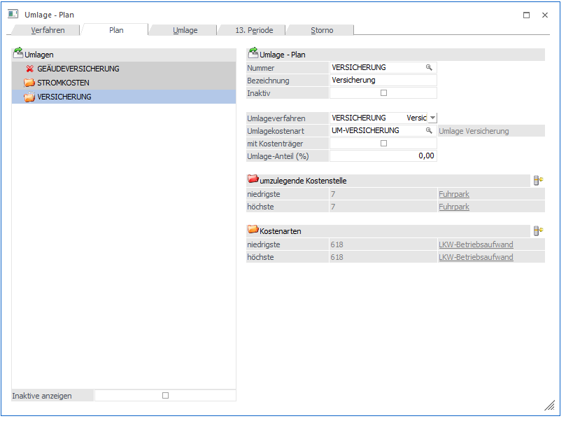
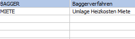
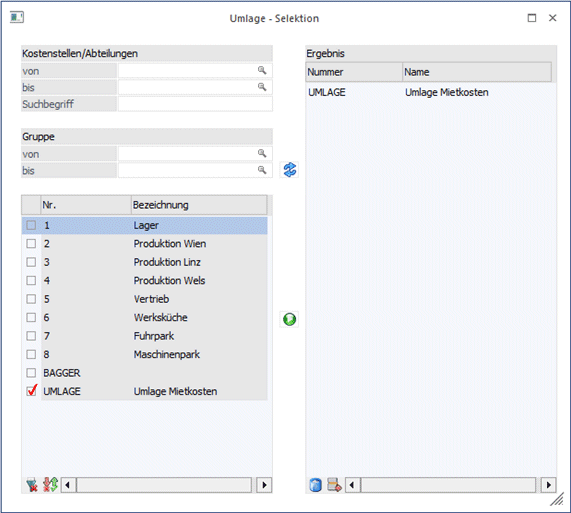
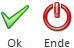

Im Register Plan ist der Umlageplan für die Kostenstellen zu erstellen, d.h. im Umlageplan wird festgelegt,
welche Bereiche (Kosten- bzw. Erlöskostenartensummen)
ü welcher Kostenstelle
ü nach welchem Umlageverfahren
ü über welche Umlagekostenart
umgelegt werden soll:

Ø inaktive anzeigen
Bei aktivierter Checkbox werden die inaktiven Umlagepläne im Tree mit dem Symbol des roten X angezeigt. Im Standard ist die Checkbox immer deaktiviert. Die Einstellung der Checkbox wird nicht benutzerspezisch gespeichert.
Ø Nr.
Eintragung einer beliebigen Nummer (Textes). Wenn Sie einen bestehenden Umlageplan bearbeiten möchten, können Sie durch Anwählen der Lupe oder Drücken der F9-Taste nach bereits angelegten Umlageplänen suchen. Die Nummer des Umlageplans hat nichts mit der Reihung im Umlageschema zu tun. Die Reihung erfolgt einfach in der Folge, in der die Pläne angelegt werden. Sie können die Reihenfolge der Umlagepläne jederzeit einfach durch Anklicken des zu verschiebenden Umlageplans und "Drag & Drop" im linken Fenster (hinauf und hinunterziehen mit gedrückter Maustaste) nachträglich verändern.
Ø Bezeichnung
Hinterlegung eines Textes für den Umlageplan.
Ø Inaktiv
Wird die Checkbox aktiviert werden inaktive Umlagepläne im Umlage-Fenster nicht mehr angezeigt und auch nicht durchgeführt.
Ø Umlageverfahren
Auswahl des Umlageverfahrens, das die Basis für die Umlage der Hilfskostenstelle bildet. Über eine Auswahlbox können Sie eines der im Register "Verfahren" zuvor angelegten Umlageverfahren auswählen.

Ø Umlagekostenart
Wählen Sie eine vorher angelegte Umlage-Kostenart zur Durchführung der Umlage aus. Zur Verbuchung von Umlagen in der Kostenrechnung ist eine eigens angelegte Umlagekostenart als Kennzeichnung notwendig. Mit dieser Umlagekostenart werden im Zuge der Umlage die Entlastung der umzulegenden Kostenstelle und die Belastung der empfangenden Kostenstellen gebucht. Es muss mindestens eine Umlagekostenart dafür im System angelegt sein. Um eine getrennte Darstellung von Umlagen zu erhalten, können auch mehrere Umlagezeilen verwendet werden, z.B. bei Durchführung einer mehrstufigen Umlage.
Ø Mit Kostenträger
Hier kann definiert werden, dass auch Kostenträger Werte aus Umlagen erhalten sollen.
Dazu müssen entsprechende Werte in der Umlagekosten-Erfassung mit Kostenträger eingegeben worden sein.
Ø Umlage-Anteil (%)
Durch den hier hinterlegten Prozentsatz kann die Umlage anteilig durchgeführt werden.
Ø umzulegende Kostenstelle
Über den Button  "Auswahl" erfolgt die Selektion der
Kostenstellen, deren Kosten umgelegt werden sollen.
"Auswahl" erfolgt die Selektion der
Kostenstellen, deren Kosten umgelegt werden sollen.
Ø Kostenarten
Über den Button "Auswahl" erfolgt die Selektion der
Kostenarten, die umgelegt werden sollen.

Es wird die erste und die letzte Kostenstelle des jeweils selektierten Umlageplans angezeigt.
Buttons

Ø OK
Ihre Selektion wird übernommen.
Ø Ende
Das Fenster schließt sich und ihre Selektion geht verloren.
Fensterbuttons
Ø Auswahl
Über den Button "Auswahl" erfolgt die Auswahl der Kostenstellen. Nur diese Kostenstellen werden für die Berechnung des Umlageverhältnisses herangezogen und nur diese Kostenstellen erhalten bei der Umlage auch Belastungen über die Umlagekostenart.
Ø  Anzeigen
Anzeigen
Über den Anzeigen-Button werden die Datensätze aufgelistet.
Ø  Hinzufügen
Hinzufügen
Alle ausgewählten Datensätze können dann mittels der Ergebnisliste der rechten Seite hinzugefügt werden.
Tabellenbuttons
Ø  Alle auswählen
Alle auswählen
Es werden alle zur Verfügung stehenden Einträge ausgewählt.
Ø  Umkehr
Umkehr
Die aktuelle Selektion wird umgekehrt.
Ø  Löschen
Löschen
Der gesamte Inhalt der Ergebnistabelle wird gelöscht
Ø  Entfernen
Entfernen
Nur die jeweils angewählte Zeile in der Ergebnistabelle wird entfernt.
Hinweis
Befinden sich Kosten UND Erlöse auf der umzulegenden Kostenstelle, sind zwei Umlageverfahren und -planschritte zu definieren: Einer für die Umlage der Kosten, einer für die Umlage der Erlöse.
Hinweis zur Plankostenumlageberechnung
Bei der Ermittlung von Istkostensätzen für Plankostenbuchungen wird bei der Umlagekostenart die Plankostenart eingetragen. Dies erfolgt automatisch, wenn im Umlageverfahren bereits eine Plankostenart definiert war.